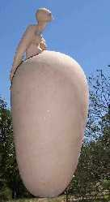
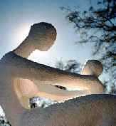

"A cántaro lleno"
Entrevista con la artista plástica (escultora), Roxana Analía Serra.
Como ocurrió para el tema del mes anterior, es necesario introducir para quienes no entendemos nada sobre Arte y menos sobre Escultura, algunas palabras aclaratorias...
"En esa esfera de la expresión humana
que denominamos creación artística, la actividad específica
de la escultura es el proceso de representación de una figura en tres
dimensiones.
El objeto escultórico es por tanto sólido, tridimensional
y ocupa un espacio.”
Señala Leonardo que una de las diferencias
entre pintura y escultura, consiste en que la primera posee luz propia, mientras
que la luz de la escultura es exterior."
(Sugiero consultar la página Web citada al pie de página,
desde la cual se extrajo el párrafo anterior)
Es que en esta artista de pequeña talla,
cuya persona irradia mucha luz, podemos contemplar no sólo la mujer talentosa,
sino fundamentalmente, la mujer madre.
Será que el paso del tiempo, minimizó algunos roles sociales fundamentales,
hasta ponerlos en un segundo lugar; y el sexo femenino, pasó a ser una
belleza
"de consumo", mientras el "mercado" se olvidaba
de aquella función que le es primordial: la de continuar la especie...
En el año 2005,
Roxana Serra se niega a reservar este rol sólo para festejarlo
un día determinado del año y quiere en cambio, efectuar
una fiesta permanente con él: "No saber cómo iba a ser la apariencia del bebé,
pero lo sentía y ya lo amaba. "Cuando trabajaba en la Universidad y debía viajar en ómnibus en tiempos prolongados, miraba los otros niños para no extrañarla tanto. Veía mi hija por todos lados, pues todos los chicos son iguales: Ojos abiertos y esa ternura..." |
 |
Pero, nos preguntamos:¿cuál es su biografía curricular? (picar aquí)
"Desde niña soñaba con ser escultora;
no había otra idea en mi mente. Tenía 7 ú 8 años
y un tío me regaló un terrón duro de arcilla, comencé
a hacer imágenes, las desarmaba y armaba otras. Mi familia no
lo veía como una profesión, tal vez sólo un pasatiempo... |
| "Traer un -hijo- al mundo, es una manifestación de fe en la vida. Este depende de la madre para desarrollarse. Los seres humanos necesitamos de otras manifestaciones de vida... -sol, tierra y agua-, estando todos en el cosmos, dependiendo unos de otros para vivir. De los tres elementos mencionados tomo el agua, símbolo de vida, que en su contínuo movimiento arrulla y perfuma el ambiente, atrayendo a animales y plantan que habitan el lugar - mi lugar- Sierra Morena. Así la obra, queda compuesta por el material que contiene la forma, ésta a su vez, receptora del líquido y la expresión de amor y ternura es expresada en los personajes, formando un todo vivido y armónico." |  |
-Mujer madre: manifestación de un estado especial, "La maternidad"
Mujer cántaro: contenedora de situaciones y receptora de afectos.
Mujer agua: generadora de interrelaciones con otras formas de existencias. Elemento
esencial de vida.-
"Yo les daré agua, ellos me darán la música de sus
trinos, el sueño de sus vuelos y la alegría de verlos.
-Yo les daré agua y, ellos me darán su verdor, sus flores, su
colorido y su perfume
-Yo les daré agua y ella, me devolverá su frescura.
- Yo les daré agua y juntos haremos el jardín que sueño..."
www.almendron.com Miguel Moliné Escalona. Zaragoza, Aragón (España)